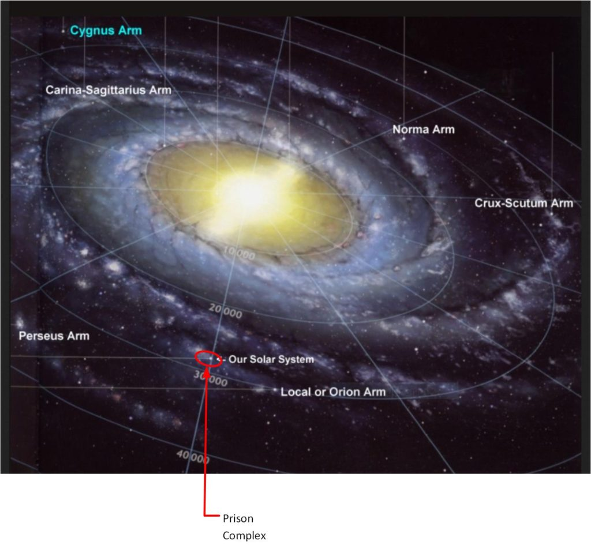
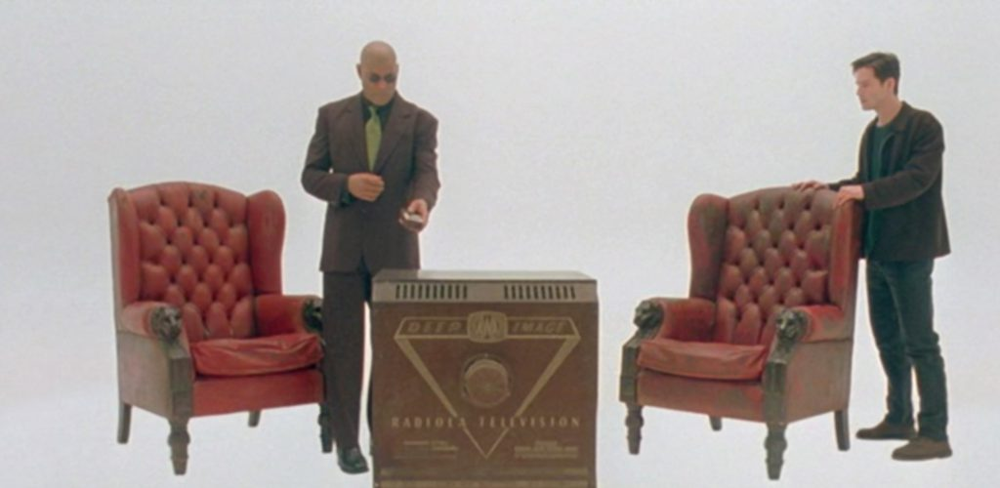
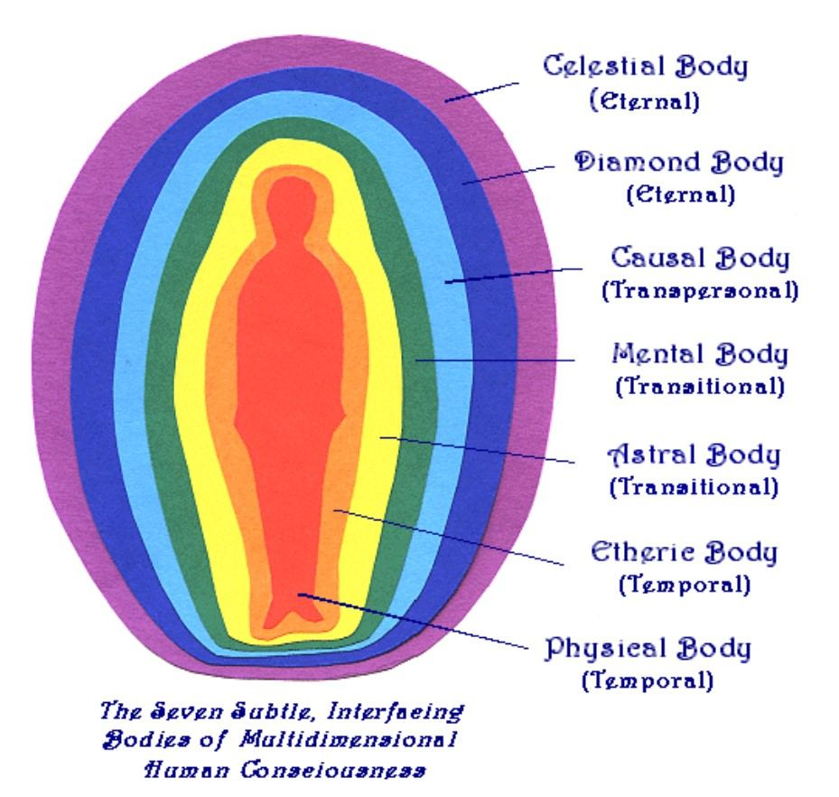
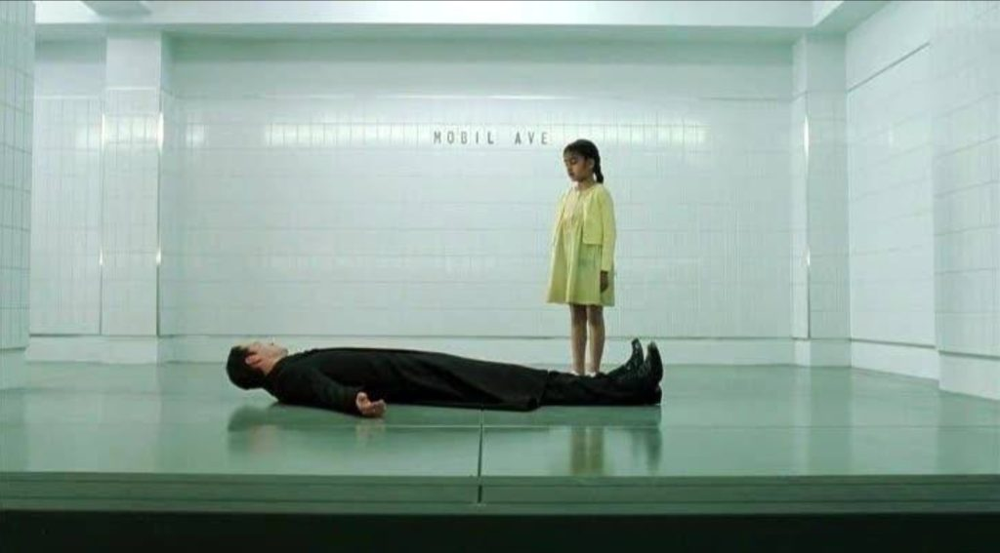
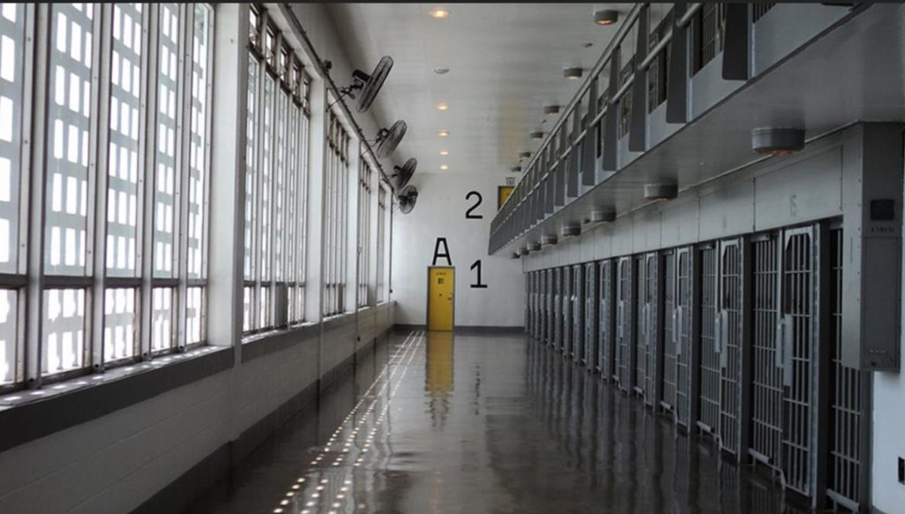

How about that for a subject title? Jeeze!
This article deals with one of the most important fundamental aspects of the fence that surround this “Prison Planet” environment. Which is the idea that the inmates reside within specially modified bodies that are designed in such a way that they can never leave the fenced in prison compound.
Basic fundamentals
The earth is a Prison Planet.
The Domain is trying to change that role to that of a rehabilitation area instead. Which I have repeatedly referred to as a “Sentience Nursery“.
This is what DM said about this…
...the Grand Elder told me that people stuck on earth (ie those who were not evil service to self oriented) would be flicked over to a “buffer” rehabilitation “reality” specifically to detox them from all the virtual reality (brainwashing) dependancies they had come to rely on whilst under the control of the Cabal (Old Empire).
All of this information (regarding this) has been detailed elsewhere on MM.
Now, due to it’s excessive size, complexity and length, it’s best that if you do not understand what is going on…
… it might be best for you to leave and go elsewhere. This article is likely to be way, way over your head.
Key principles
Actually, the idea that the earth (along with it’s solar system and four / five other solar systems) are all part of a Prison Complex should not be too difficult to understand.

Additionally, the idea that the entire Prison Complex is much like the artificial-reality that is described within the movie The Matrix shouldn’t be that difficult to understand either.

The key idea being that there is the true and actual reality, and at some point in time, a society known as “The Old Empire” created a Prison system for it’s criminals. This prison system is an artificial reality. Just like in the movie The Matrix.
Where in the movie “The Matrix” the people can move in and out of the artificial reality by a system of electronics (such as a phone call that simulates a change in electronic manipulation)…
…it is different in this Prison Complex.
The differences…
All and any IS-BE consciousness can enter the electro-magnetic force field at will. They can also leave it at will as well.
After all, there are many vehicles from The Domain and others that come in this Prison Environment all the time and they are able to come and go at will.
But…
…once you are designated as an inmate, your entire “self” is erased, and you are provided with a new body (system) to inhabit.
And this new body has been modified in such a way that it cannot leave the Prison Complex ever. It is sort of like having a product or software with certain features blanked out.
Since you have a new body that is unable to act, behave and respond like the old body did, you are not trapped in a feature-reduced or retarded body. As such, the warden and the prison system controls everything that you have.
Everything.
This article talks about the differences between the “normal” human body, and the body used by inmates. We also discuss the different types or levels of a body, and what The Domain is doing to them for the irregular volunteers.
Human bodies are all over the universe
The first thing that you all must remember is that there is no such thing as evolution.
The Domain (or whatever preceded it) manufactured every type of creature that we know of.
And humans, as one such creature, is a dominant biological template that lies everywhere all over the universe. (Not THE dominant template, but one of the more common templates for a “Sun Type 12, Class 7 planet”.)
The following are extracts from “Alien Interview parsing of comments deemed trillions of years old” HERE…
"The origins of this universe and life on Earth, as discussed in the textbooks I have read, are very inaccurate. Since you serve your government as a medical personnel, your duties require that you understand biological entities. So, I am sure that you will appreciate the value of the material I will share with you today. The text of books I have been given on subjects related to the function of life forms contain information that is based on false memories, inaccurate observation, missing data, unproven theories, and superstition.
The correct information about the origins of biological entities has been erased from your mind, as well as from the minds of your mentors. In order to help you regain your own memory, I will share with you some factual material concerning the origin of biological entities. I asked Airl if she was referring to the subject of evolution. Airl said, "No, not exactly". You will find "evolution" mentioned in the ancient Vedic Hymns. The Vedic texts are like folk tales or common wisdoms and superstitions gathered throughout the systems of The Domain. These were compiled into verses, like a book of rhymes. For every statement of truth, the verses contain as many half-truths, reversals of truth and fanciful imaginings, blended without qualification or distinction. The theory of evolution assumes that the motivational source of energy that animates every life form does not exist. It assumes that an inanimate object or a chemical concoction can suddenly become "alive" or animate accidentally or spontaneously. Or, perhaps an electrical discharge into a pool of chemical ooze will magically spawn a self- animated entity. There is no evidence whatsoever that this is true, simply because it is not true. Dr. Frankenstein did not really resurrect the dead into a marauding monster, except in the imagination of the IS-BE who wrote a fictitious story one dark and stormy night. No Western scientist ever stopped to consider who, what, where, when or how this animation happens. Complete ignorance, denial or unawareness of the spirit as the source of life force required to animate inanimate objects or cellular tissue is the sole cause of failures in Western medicine. In addition, evolution does not occur accidentally. It requires a great deal of technology which must be manipulated under the careful supervision of IS-BEs. Very simple examples are seen in the modification of farm animals or in the breeding of dogs. However, the notion that human biological organisms evolved naturally from earlier ape-like forms is incorrect. No physical evidence will ever be uncovered to substantiate the notion that modern humanoid bodies evolved on this planet. The reason is simple: the idea that human bodies evolved spontaneously from the primordial ooze of chemical interactivity in the dim mists of time is nothing more than a hypnotic lie instilled by the amnesia operation to prevent your recollection of the true origins of Mankind. Factually, humanoid bodies have existed in various forms throughout the universe for trillions of years.
The following are extracts from Alien Interview deemed billions of years old from HERE…
I can relate part of this history from personal experience: Many billions of years ago I was a member of a very large biological laboratory in a galaxy far from this one. It was called the "Arcadia Regeneration Company". I was a biological engineer working with a large staff of technicians. It was our business to manufacture and supply new life forms to uninhabited planets. There were millions of star systems with millions of inhabitable planets in the region at that time. There were many other biological laboratory companies at that time also. Each of them specialized in producing different kinds of life forms, depending on the "class" of the planet being populated. Over a long span of time these laboratories developed a vast catalogue of species throughout the galaxies. The majority of basic genetic material is common to all species of life. Therefore, most of their work was concerned with manipulating alterations of the basic genetic pattern to produce variations of life forms that would be suitable inhabitants for various planetary classes. The "Arcadia Regeneration Company" specialized in mammals for forested areas and birds for tropical regions. Our marketing staff negotiated contracts with various planetary governments and independent buyers from all over the universe. The technicians created animals that were compatible with the variations in climate, atmospheric and terrestrial density and chemical content. In addition we were paid to integrate our specimens with biological organisms engineered by other companies already living on a planet. In order to do this our staff was in communication with other companies who created life forms. There were industry trade shows, publications and a variety of other information supplied through an association that coordinated related projects. As you can imagine, our research required a great deal of interstellar travel to conduct planetary surveys. This is when I learned my skills as a pilot. The data gathered was accumulated in huge computer databases and evaluated by biological engineers. A computer is an electronic device that serves as an artificial "brain" or complex calculating machine. It is capable of storing information, making computations, solving problems and performing mechanical functions. In most of the galactic systems of the universe, very large computers are commonly used to run the routine administration, mechanical services and maintenance activities of an entire planet or planetary system. Based on the survey data gathered, designs and artistic renderings were made for new creatures. Some designs were sold to the highest bidder. Other life forms were created to meet the customized requests of our clients. The design and technical specifications were passed along an assembly line through a series of cellular, chemical, and mechanical engineers to solve the various problems. It was their job to integrate all of the component factors into a workable, functional and aesthetic finished product. Prototypes of these creatures were then produced and tested in artificially created environments. Imperfections were worked out, modifications made and eventually the new life form was "endowed" or "animated" with a life force or spiritual energy before being introduced into the actual planetary environment for final testing. After a new life form was introduced, we monitored the interaction of these biological organisms with the planetary environment and with other indigenous life-forms. Conflicts resulting from the interaction between incompatible organisms were resolved through negotiation between ourselves and other companies. The negotiations usually resulted in compromises requiring further modification to our creatures or to theirs or both. This is part of a science or art you call "Eugenics". In some cases changes were made in the planetary environment, but not often, as planet building is much more complex than making changes to an individual life form.
What you see now on Earth is the huge variety of life forms left behind. Your scientists believe that the fallacious "theory of evolution" is an explanation for the existence of all the life forms here. The truth is that all life forms on this and any other planet in this universe were created by companies like ours. How else can you explain the millions of completely divergent and unrelated species of life on the land and in the oceans of this planet? How else can you explain the source of spiritual animation which defines every living creature? To say it is the work of "god", is far too broad. Every IS-BE has many names and faces in many times and places. Every IS-BE is a god. When they inhabit a physical object they are the source of Life. For example, there are millions of species of insects. About 350,000 of these are species of beetles. There may be as many as 100 million species of life forms on Earth at any given time. In addition, there are many times more extinct species of life on Earth than there are living life forms. Some of these will be rediscovered in the fossil or geological records of Earth. The current "theory of evolution" of life forms on Earth does not consider the phenomena of biological diversity. Evolution by natural selection is science fiction. One species does not accidentally, or randomly evolve to become another species, as the Earth textbooks indicate, without manipulation of genetic material by an IS-BE.
Factually, some organisms on Earth, such as Proteobacteria, are modifications of a Phylum designed primarily for "Star Type 3, Class C" planets. In other words, The Domain designation for a planet with an anaerobic atmosphere nearest a large, intensely hot blue star, such as those in the constellation of Orion's Belt in this galaxy. Creating life forms is very complex, highly technical work for IS-BEs who specialize in this field. Genetic anomalies are very baffling to Earth biologists who have had their memory erased. Unfortunately, the false memory implantations of the "Old Empire" prevent Earth scientists from observing obvious anomalies. The greatest technical challenge of biological organisms was the invention of self- regeneration, or sexual reproduction. It was invented as the solution to the problem of having to continually manufacture replacement creatures for those that had been destroyed and eaten by other creatures. Planetary governments did not want to keep buying replacement animals. The idea was contrived trillions of years ago as a result of a conference held to resolve arguments between the disputing vested interests within the biotechnology industry. The infamous "Council of Yuhmi-Krum" was responsible for coordinating creature production. A compromise was reached, after certain members of the Council were strategically bribed or murdered, to author an agreement which resulted in the biological phenomenon which we now call the "food chain". The idea that a creature would need to consume the body of another life form as an energy source was offered as a solution by one of the biggest companies in the biological engineering business. They specialized in creating insects and flowering plants. The connection between the two is obvious. Nearly every flowering plant requires a symbiotic relationship with an insect in order to propagate. The reason is obvious: both the bugs and the flowers were created by the same company. Unfortunately, this same company also had a division which created parasites and bacteria. The name of the company roughly translated into English would be "Bugs & Blossoms" . They wanted to justify the fact that the only valid purpose of the parasitic creatures they manufactured was to aid the decomposition of organic material. There was a very limited market for such creatures at that time. In order to expand their business they hired a big public relations firm and a powerful group of political lobbyists to glorify the idea that life forms should feed from other life forms. They invented a "scientific theory" to use as a promotion gimmick. The theory was that all creatures needed to have "food" as a source of energy. Before that, none of the life forms being manufactured required any external energy. Animals did not eat other animals for food, but consumed sunlight, minerals or vegetable matter only. Of course, "Bugs & Blossoms" went into the business of designing and manufacturing carnivores. Before long, so many animals were being eaten as food that the problem of replenishing them became very difficult. As a 'solution', "Bugs & Blossoms" proposed, with the help of some strategically placed bribes in high places, that other companies begin using 'sexual reproduction' as the basis for replenishing life-forms. "Bugs & Blossoms" was the first company to develop blueprints for sexual reproduction, of course. As expected, the patent licenses for the biological engineering process required to implant stimulus-response mating, cellular division and pre-programmed growth patterns for self-regenerating animals were owned by "Bugs & Blossoms" too. Through the next few million years laws were passed that required that these programs be purchased by the other biological technology companies. These were required to be imprinted into the cellular design of all existing life- forms. It became a very expensive undertaking for other biotechnology companies to make such an awkward, and impractical idea work. This led to the corruption and downfall of the entire industry. Ultimately, the 'food and sex' idea completely ruined the bio-technology industry, including "Bugs & Blossoms". The entire industry faded away as the market for manufactured life forms disappeared. Consequently, when a species became extinct, there is no way to replace them because the technology of creating new life forms has been lost. Obviously, none of this technology was ever known on Earth, and probably never will be. There are still computer files on some planets far from here which record the procedures for biological engineering. Possibly the laboratories and computers still exist somewhere. However, there is no one around doing anything with them. Therefore, you can understand why it is so important for The Domain to protect the dwindling number of creatures left on Earth. The core concept behind 'sexual reproduction' technology was the invention of a chemical/electronic interaction called "cyclical stimulus-response generators". This is an programmed genetic mechanism which causes a seemingly spontaneous, recurring impulse to reproduce. The same technique was later adapted and applied to biological flesh bodies, including Homo Sapiens. Another important mechanism used in the reproductive process, especially with Homo Sapiens type bodies, is the implantation of a "chemical-electrical trigger" mechanism in the body. The "trigger" which attracts IS-BEs to inhabit a human body, or any kind of "flesh body", is the use of an artificially imprinted electronic wave which uses "aesthetic pain" to attract the IS-BE. Every trap in the universe, including those used to capture IS-BEs who remain free, is "baited" with an aesthetic electronic wave. The sensations caused by the aesthetic wavelength are more attractive to an IS-BE than any other sensation. When the electronic waves of pain and beauty are combined together, this causes the IS-BE to get "stuck" in the body. The "reproductive trigger" used for lesser life forms, such as cattle and other mammals, is triggered by chemicals emitted from the scent glands, combined with reproductive chemical- electrical impulses stimulated by testosterone, or estrogen. These are also interactive with nutrition levels which cause the life form to reproduce more when deprived of food sources. Starvation promotes reproductive activity as a means of perpetuating survival through future regenerations, when the current organism fails to survive. These fundamental principles have been applied throughout all species of life. The debilitating impact and addiction to the "sexual aesthetic-pain" electronic wave is the reason that the ruling class of The Domain do not inhabit flesh bodies. This is also why officers of The Domain Forces only use doll bodies. This wave has proven to be the most effective trapping device ever created in the history of the universe, as far as I know. The civilizations of The Domain and the "Old Empire" both depend on this device to "recruit" and maintain a work force of IS-BEs who inhabit flesh bodies on planets and installations. These IS-BEs are the "working class" beings who do all of the slavish, manual, undesirable work on planets.
Thus, the human archetype is a creation of The Domain, or a precursor to it. And it is located throughout the universe.You will find people who look like “everyday” humans, big and old, fat and thin, beautiful and ugly, all over the universe.
Various IS-BE’s can control humans by exposing them to the addiction of the “sexual aesthetic-pain” desires of the human form.
Earth Prison Complex Bodies are unique
However, while the “sexual aesthetic-pain” desires can snare and entangle a given IS-BE…
…a different system must be employed to keep them tethered to a specific geographic region.
Much like clipping off the wings of a bird, or foot binding of attractive wives, or a chain around a slaves neck would do. This Prison Complex utilizes a very special kind of fence. One that ONLY reacts to the movement of inmates.
Apparently that is what happened in the creation of this “Prison Complex”.
There were alterations to the human (and other species that also serve as prison vehicles) that prevent them from ever leaving the Prison Complex. I argue that the alterations revolve around all elements of a human body. And this includes the physical body as well as the non-physical bodies.
The make up of a body
If you study any of the oriental religions, you will discover discussions and studies of the “planes of existence” where different elements of yourself reside. On each “plane of existence” you have an associated body.

Thee bodies radiate outward, with the coarsest body being the Physical body. And as you move further away from that body (not necessarily in a Geo-position sense, but rather in an energy sense) your bodies get “finer”, “lighter” and “more energetic with higher energies”.
Or so I have read.
But I am a simple guy, and we really do not need to get involved in all those details. I have the distinct impression that many of the writings on this subject are only confluence of religious dogma rather than any practical application. Or, to put it in a better way…
… “who cares about the name of the 3rd level of the casual plane, if you cannot use that information to improve your life?”
We are going to keep things here on an elementary level. If you wish to study the religious teachings / new age / spiritual teachings there are tons of websites all over the internet that you can refer to. But for now, we are going to keep things really simple.
[1] Your consciousness (IS-BE) resides within a container.
[2] This container exists within a Prison Complex as a “human-shaped inmate”.
[3] The “human-shaped inmate” form is derived from the human form that is common all over the universe.
The difference being that it has been modified to exist only within a Prison Complex.
[4] This modification is complete and affects both the physical body, but the non-physical body as well
Simplification
So, because of this we will consider all those various “light bodies” that reside on all those other “planes of existence” as one singular “combined body” that is the non-physical body.
Thus, this simplification for the “human inmate body” is actually…
- A physical body.
- A non-physical body.
The Physical Body
It is impossible for the physical body to cross the electromagnetic “fence” that surrounds the Prison Complex. The technology of the inmates is not at the level that will permit them to build a spacecraft that will be able to cross the fence. Nor will the system ever permit the prison inmates ever obtain the kind of technology needed to build a space-traveling vehicle that can breech the fence line.
One must remember that the ONLY reason why earth’s technology is so high presently is because the mental suppression technology (or at least one of the mechanisms) was destroyed by The Domain around 1150AD. Prior to that, it was anticipated that most of the inhabitants of the Prison Complex, would at best, be living in a primitive early iron-age culture for hundreds of thousands of years.
Thus, the system of constant wars, destruction, and collapse of civilizations and technology on earth is designed to prevent any kinds of space travel or advanced propulsion techniques that might allow one to escape from the prison complex.
The non-physical body
The non-physical body can move about all over. It is not constrained by technology or manufacturing ability.
It’s the power of thought. An IS-BE who can remember a specific location or memory outside of the Prison Complex can visualize it and propel themself outside of the Prison Complex.
Thus it is imperative that all memories be suppressed. Without any idea of where to go, people to meet, places to visit, the inmate is forced to be tethered to the Prison Complex.
However, what if something reminds an inmate of some distant memory. While every action has been taken to prevent the occurrence of memories, the fact remains that one singular memory, no matter how faint or brief can be used by an IS-BE to “latch on to” and “home into” and thus go through the electronic fence that surrounds the Prison Complex.
Thus it is of particular interest that the non-physical body be modified so that it cannot go through the electromagnetic fence line surrounding the Prison Complex.
How the Domain alters the body to avoid the force screens
The “Old Empire” has designed a system where the only way out of the Prison Complex is through use of a “normal” non-physical body. And inmates have a modified body that prevents them from leaving the Prison Complex.
Once in, you are never going to leave.
It is much like the scene in The Matrix Revolutions where Neo is trapped in a subway.
The final installment in the Matrix trilogy finds an unconscious Neo trapped in a subway station in a zone between the Matrix and the machine world. Inside the Matrix, Neo is trapped in a subway station named Mobil Ave (an anagram for limbo), a transition zone between the Matrix and the Machine City. He meets a "family" of programs, including a girl named Sati. The "father" tells Neo the subway is controlled by the Trainman, a program loyal to the Merovingian.

The modifications necessary to do this
I cannot state explicitly enough what the modifications are to the non-physical body, nor can I even begin to comprehend what the non-physical body is like. I once observed my non-physical body being worked on and it was really colorful, chaotic and detailed. And way, way beyond my comprehension.
It’s a medical procedure.
Once you understand that, and calm down all your fears you will see it in fine comforting images that provide answers and insight instead of fearful images of horror and terror.
What I do know is that the non-physical body must go through a number of procedures to be able to suppress or eliminate the mechanisms associated with this Prison Complex. The changes made to YOUR body must be undone. And it must be undone BEFORE you are tricked into going back into the “Tunnel of light”.
The Procedure and consciousness extraction
I will relate a little story that occurred to me.
Around 1984-5, before I was compelled to go to China Lake NWC, I had an (intense) urge to visit the North Carolina seacoast. At that time, my wife and I were living in the hills not so far from Nashville, NC. And so, out of the blue, my wife and I traveled a eight hour drive to go to this tiny bath-house on the beach. It was around 8 or 9 at night when we arrived. The area was deserted (aside from one other car) and We both got out of the van and walked towards the bath house. There, we met to other people. One, a woman took my wife by the elbow and led her back to our van where they chatted up a storm on the road, and the man took me towards the bath-house. Suddenly I was inside this lounge of sorts, and he led me down to sit. So I sat down on this sofa. A pleasant woman came up to us. She reminded me of an airline stewardess. Everyone was “normal” looking. She smiled and placed a greenish box on the counter of the coffee table in front of me. Then she did something. I’m not quite sure what. The upshot is that my consciousness went into that box. And I was unable to feel any movement of my body. It felt like I was completely paralyzed all over. It was like "sleep paralysis" except that I wasn't asleep. A few hours passed. The next thing I knew, I was waving goodbye to the man and the woman. They stood there near the bath-house on that deserted stretch of road, and we drove home. I never recounted what happened. I never discussed it with anyone. Nor did my wife. The only thing that my wife said “That was weird”. And we rode home in silence, and didn’t say anything else. We arrived back in the early morning.
This is kind of how it is done.
When The Domain wants to modify your non-physical body, the take you to an operating room and then place your consciousness in a containment field; or box, or container. It is possible for you to watch what they are doing, were it to be suggested to you.
And that is it.
Warnings about the non-physical reality
The non-physical world is very, very hyper sensitive to thoughts.
So if you are afraid when your consciousness enters the containment field, your fears will conjure up all sorts of nasty images and terrible things that will occupy your surroundings. It’s really awful.
So you must remain calm.
HERE is an article that describes a “Lucid dream” where I was extracted to a Domain medical facility, and my consciousness put into a containment field where I would experience “sleep paralysis”.
Evil people realize they are in a prison and make the best of it
In many prisons you have groups of inmates that form gangs and societies.
They band together and use their strengths to carve out a life for themselves under the harsh prison environment. There is no reason why this isn’t occurring here today.
We see that Washington DC is the psychopath center for the entire planet.
Have you ever wondered why?
When the Mantids tell you to make a future life for yourself, and they help guide you to lay out a pre-birth world-line template, why do you listen to them? They show care, concern and compassion. They are loving and caring.
But the evil self-centered IS-BE’s go their own way and set forth pre-birth world-line templates of power, lust, greed and physical pleasures and ignore the advice of the Mantids.
And when they die, and return back to “Heaven” it’s all forgiven and forgotten.
What a gig!
While all the rest of us have all these prohibitions on how we live our lives and what we can and cannot do, and when we are hurt, we are told to forgive those that hurt us.
And we all go to Heaven together.
And then they (the ones that hurt us) make the next-life arrangements to return to a star-studded life full of sensory pleasures and wealth.
And we, the dumb fools we are, we listen to our loving Mantids who tell us to suffer and experience pain… to make us better.
What a gig!
Prison administrators escaped by going into “General Population” but are not using a prison-body
I would like to take a moment to underline an aspect that haunts me. I cannot shake it. But apparently, the administrators and operators of this Prison Complex escaped The Domain. And the method of escape was to throw themselves into the Prison itself.
After all, we know that there are agents or “operators” that work inside the Prison Complex itself…
"Old Empire" operatives act as an unseen influence on international bankers. The banks are operated covertly as a non-combatant provocateur to covertly promote and finance weapons and warfare between the nations of Earth. Warfare is an internal mechanism of control over the inmate population.
These individual IS-BE’s that operate within the prison “walls” must have some sort of key /pass /badge /fob /or knowledge that enables them to control the environment like they do. And thus, it is not unreasonable to expect the administration to have access to this knowledge.
Keep in mind that only thing that is specialty that that they know how the prison system works. So they are in this prison complex; on this earth… walking around near us, nearby. All the time with the knowledge in their heads of how to turn off the many, many systems and avoid the electromagnetic containment fence.
They live within the prison complex living a nice comfortable life of ease. They are somewhere. And some how, if they can be located, and brought to the officers and personnel of the Domain, many of the mysteries of the Prison Complex can be resolved.
Summary
For most humans, the body that you have is prison attire. (Or as we used to say in the ADC; “State Issue”.) This is a special uniform that makes it easy to identify who you are and what your role is. Once you put on the clothing and don the attire you cannot leave the prison grounds. This attire is ONLY for use on prison property.
If a guard sees you wearing this clothing and you enter a sally port or gate, they will draw their weapon and alert the prison for someone to come and take you back inside. It is a fundamental aspect of prison life.
In a similar manner, every human within this Prison Complex wears his “State Issue”. This is similar to that of American prisons. But instead of clothing that a person wears, it’s a physical (and non-physical body) that the consciousness dons when it enters the MWI reality universe (from the Prison “Heaven”).
The body that you have prevents you from crossing the electromagnetic force field fence. And if you ever want to egress from the Prison Complex, you will need to [1] have your body altered so that you can pass through it.
Or…
[2] You can wait. Lifetime after lifetime, until (on day) the force-field fence is turned off and everyone can (line up) leave this Prison Complex together.
